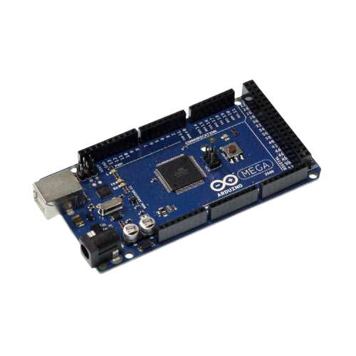
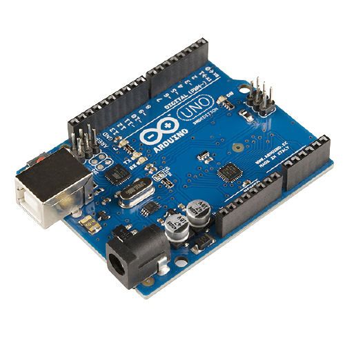
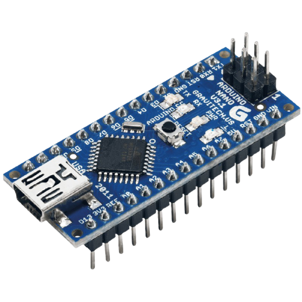
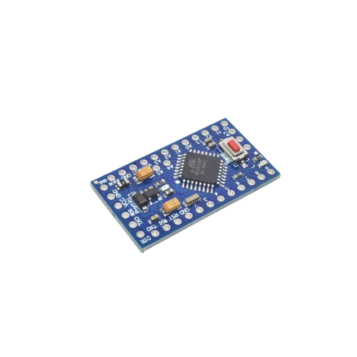

Board |
Specifications |
|---|---|
Arduino MEGA |
Microcontroller ATmega2560 Operating Voltage 5V Input Voltage (RECOMMENDED) 7-12V Input Voltage (LIMIT) 6-20V Digital I/O Pins 54 (of which 15 provide PWM output) Analog Input Pins 16 DC Current per I/O PIN 20 mA DC Current for 3.3V PIN 50 mA Flash Memory 256 KB of which 8 KB used by bootloader SRAM 8 KB EEPROM 4 KB Clock Speed 16 MHz LED_BUILTIN 13 Length 101.52 mm Width 53.3 mm Weight 37 g |
Arduino Uno Board |
Microcontroller: ATmega328P Operating Voltage: 5V Input Voltage (recommended): 7-12V Inout Voltage (limit): 6-20V Digital I/O Pins: 14 (of which 6 provide PWM output) PWM Digital I/O Pins: 6 Analog Input Pins: 6 DC Current per I/O Pin: 20 mA DC current for 3.3V Pin: 50 mA Flash Memory: 32 KB (ATmega328P) of which 0.5 KB used by bootloader SRAM: 2 KB (ATmega328P) EEPROM: 1 KB (ATmega328P) Clock Speed: 16 MHz LED_BUILTIN: 13 Length: 68.6 mm Width: 58.4 mm Weight: 25 g |
Arduino Nano Board |
Microcontroller ATmega328 Operating Voltage (logic level): 5 V Input Voltage (recommended): 7-12 V Input Voltage (limits): 6-20 V Digital I/O Pins : 14 (of which 6 provide PWM output) Analog Input Pins: 8 DC Current per I/O Pin: 40 mA Flash Memory 32 KB (ATmega328) of which 2 KB used by bootloader SRAM: 2 KB (ATmega328) EEPROM: 1 KB (ATmega328) Clock Speed: 16 MHz Dimensions: 0.73" x 1.70" |
Arduino Pro mini |
Microcontroller ATmega328 Board Power Supply 3.35 -12 V (3.3V model) or 5 - 12 V (5V model) Circuit Operating Voltage 3.3V or 5V (depending on model) Digital I/O Pins 14 PWM Pins 6 UART 1 SPI 1 I2C 1 Analog Input Pins 6 External Interrupts 2 DC Current per I/O Pin 40 mA Flash Memory 32KB of which 2 KB used by bootloader * SRAM 2 KB EEPROM 1 KB Clock Speed 8 MHz (3.3V versions) or 16 MHz (5V versions) |